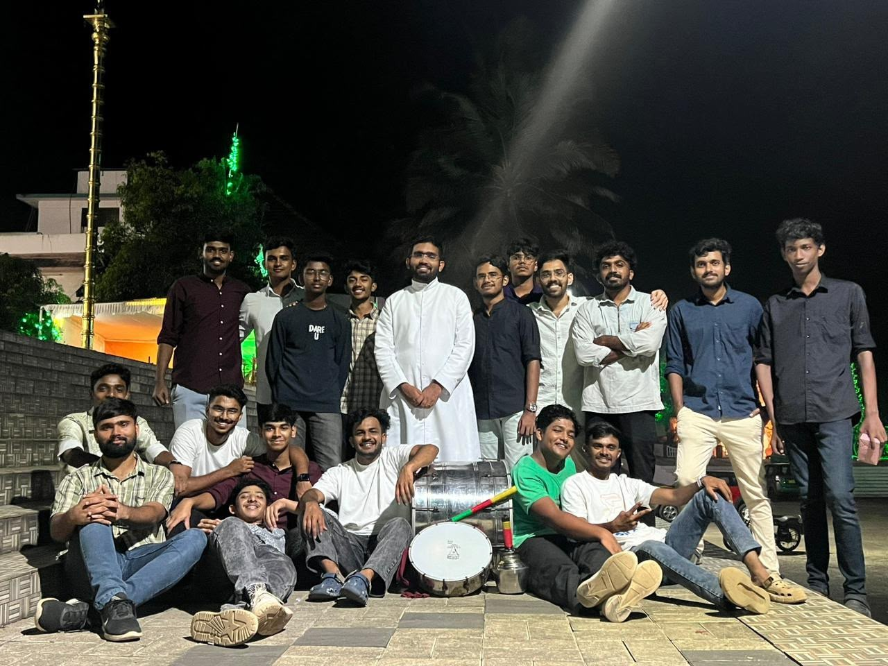
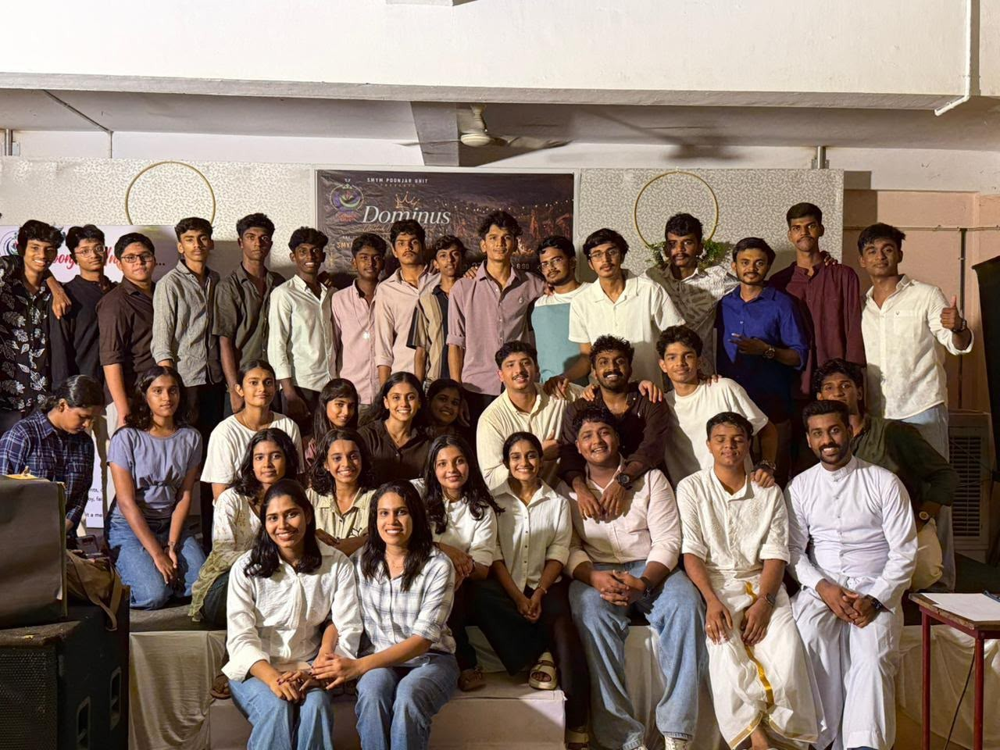
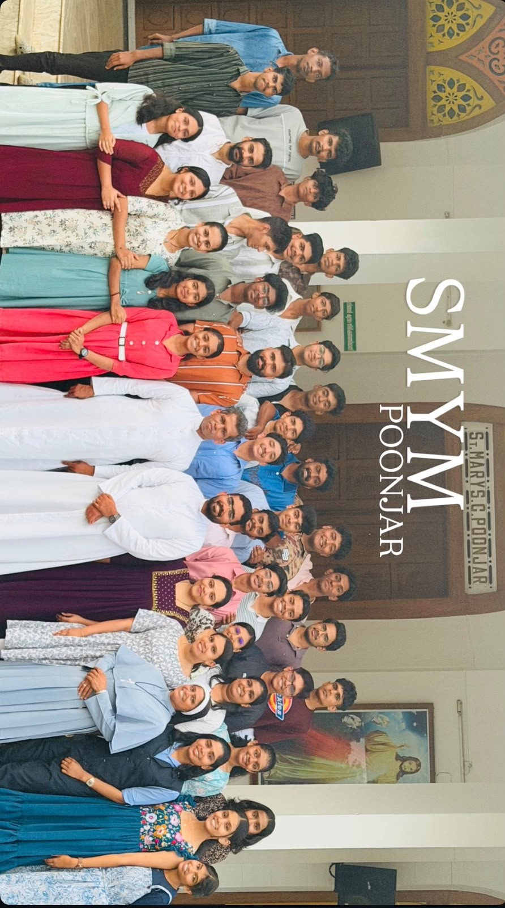
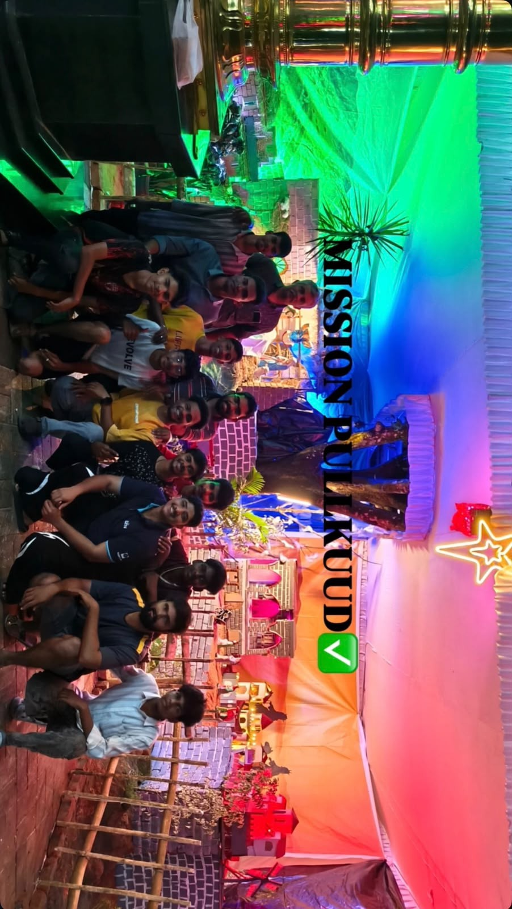
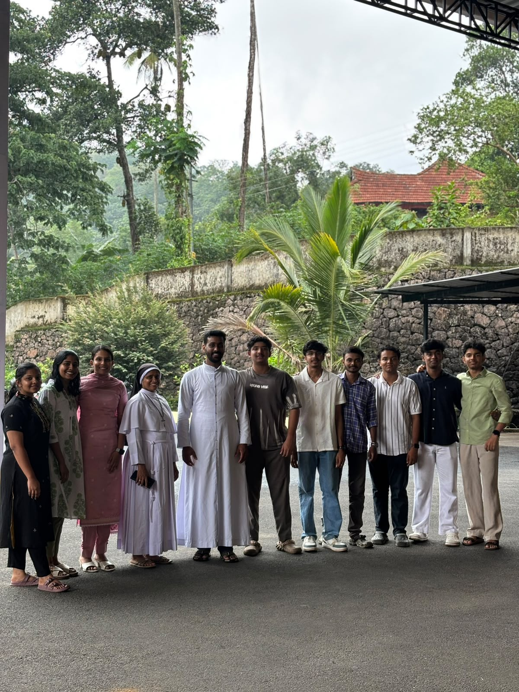
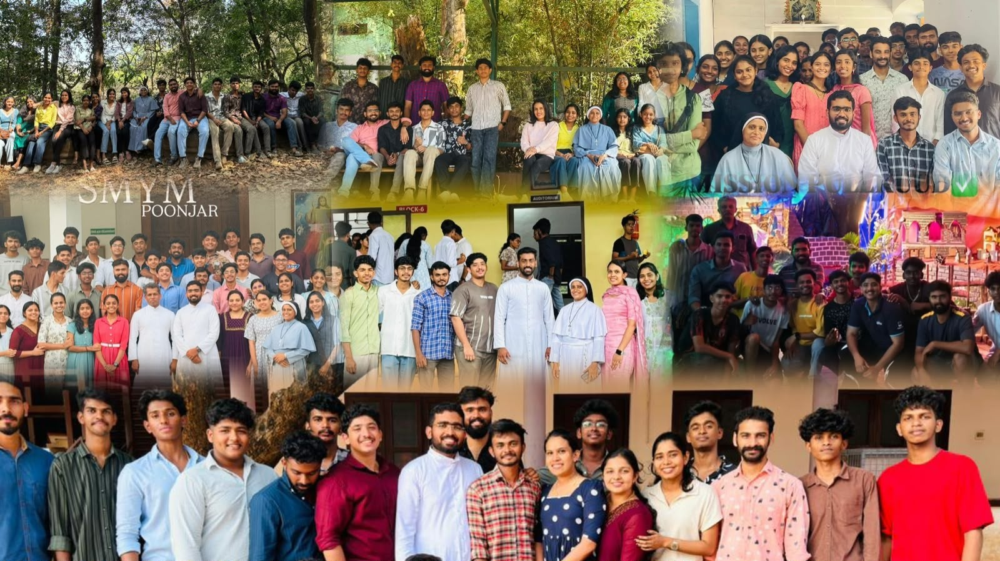

The Syro Malabar Youth Movement (SMYM) Poonjar Unit was established in 2017 with the vision of uniting the youth of the parish through Faith, Fellowship and Service. Over the years, SMYM Poonjar has grown into a vibrant family where young people discover leadership, deepen their spiritual lives and build lifelong friendships. Every generation of members has contributed to the success of the movement, carrying forward the legacy of those who served before them. The unit has actively organized youth camps, retreats, medical camps, Christmas carol programs, charity initiatives, environmental cleaning drives, cultural celebrations, mission activities and numerous parish events. Through these efforts, members have not only served society but also strengthened their faith and commitment to the Church. Guided by our Patron, Director and dedicated Executive Committee, SMYM Poonjar continues its journey with enthusiasm, inspiring today's youth to become responsible Christian leaders who serve both the Church and society with love, unity and compassion.
Founded
Years of Service
Activities
Members Inspired
Capturing Moments • Creating Memories

Videographer / Editor

Videographer / Editor

Videographer / Editor
Moments captured through faith, friendship and service.






Growing together in Faith, Fellowship and Service.
Learn More